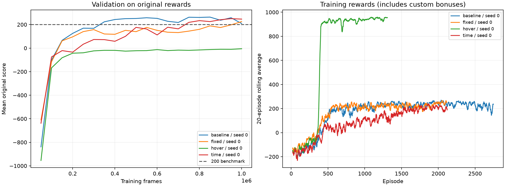
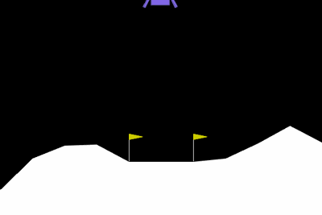
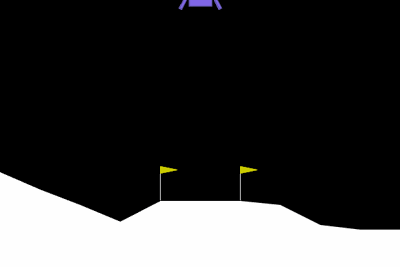
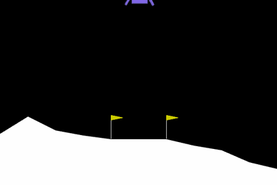

Rocket Landing Lab
PPO learns from eight numbers to choose between four engine actions.
These results compare the original reward with three reward-shaping experiments.
Read the original score first. A custom bonus can increase training reward while making
landing worse. Each model is tested without custom reward shaping. The same episode seeds
are used across models. One training seed is a demonstration, not evidence of a robust improvement.

The environment's +100 terminal reward identifies a resting lander. Failures combine crashes
and leaving the bounds. Timeouts are recorded separately. Engine-use cost is a proxy based on
the game's penalties, not kilograms of fuel. The 200-point benchmark is an average-return target,
not an individual-episode landing test.
Before training: random rocket


baseline / seed 0
238.8 original mean score
Benchmark met · 100 held-out episodes ·
94% landed · 0% timed out
Standard deviation: 65.0. Average episode:
316 frames. Engine-use cost proxy: 44.1.
Airborne upright/slow frames: 33%.
Evaluated model's training steps: 1,003,520.
Videos below use the original reward and fixed episode seeds. They are examples,
not the complete evaluation.


fixed / seed 0
221.3 original mean score
Benchmark met · 100 held-out episodes ·
92% landed · 7% timed out
Standard deviation: 41.9. Average episode:
452 frames. Engine-use cost proxy: 67.3.
Airborne upright/slow frames: 66%.
Evaluated model's training steps: 1,003,520.
Videos below use the original reward and fixed episode seeds. They are examples,
not the complete evaluation.
hover / seed 0
-8.2 original mean score
Below 200 benchmark · 100 held-out episodes ·
0% landed · 100% timed out
Standard deviation: 20.4. Average episode:
1000 frames. Engine-use cost proxy: 173.0.
Airborne upright/slow frames: 96%.
Evaluated model's training steps: 1,003,520.
Videos below use the original reward and fixed episode seeds. They are examples,
not the complete evaluation.
time / seed 0
235.9 original mean score
Benchmark met · 100 held-out episodes ·
89% landed · 11% timed out
Standard deviation: 39.5. Average episode:
412 frames. Engine-use cost proxy: 50.7.
Airborne upright/slow frames: 50%.
Evaluated model's training steps: 1,003,520.
Videos below use the original reward and fixed episode seeds. They are examples,
not the complete evaluation.
What to investigate
Does the hover bonus produce more airborne frames or
timeouts? Does the fixed reward still land? Compare the full evaluation CSV and videos;
hovering is a possible learned behavior, not a guaranteed result.
The fixed reward removes
the hover bonus, adds a small time cost, and uses a discounted potential difference. It is an
experiment, not a promise that it beats the original reward.